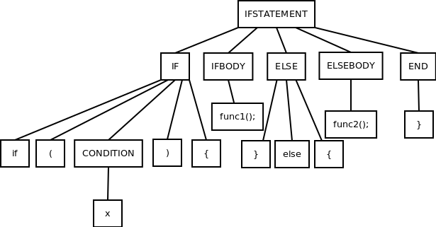

By now, you've seen strings derived via a context-free grammar and their representations as a parse tree. In this section, we'll explore the different types of string derivations and how they relate to parse trees.
Definition
In a leftmost derivation, we always apply a production for the leftmost nonterminal in our sequence of symbols.
Definition
In a rightmost derivation, we always apply a production for the rightmost terminal in our sequence of symbols.
Example
Let's say we have the following context-free grammar:
IFSTATEMENT → IF IFBODY ELSE ELSEBODY END
IF → if (CONDITION) {
CONDITION → x | y
IFBODY = func1();
ELSE = } else {
ELSEBODY = func2();
END = }
Σ = {if, (, ), x, y, func1();, "}", else, "{", func2()}
Let's say our input string is:
if (x) { func1(); } else { func2() }
The leftmost derivation of this string is:
IFSTATEMENT
→ IF IFBODY ELSE ELSEBODY END
→ if (CONDITION) { IFBODY ELSE ELSEBODY END
→ if (x) { IFBODY ELSE ELSEBODY END
→ if (x) { func1(); ELSE ELSEBODY END
→ if (x) { func1(); } else { ELSEBODY END
→ if (x) { func1(); } else { func2(); END
→ if (x) { func1(); } else { func2(); }
Conversely, the rightmost derivation of this string is:
IFSTATEMENT
→ IF IFBODY ELSE ELSEBODY END
→ IF IFBODY ELSE ELSEBODY }
→ IF IFBODY ELSE func2(); }
→ IF IFBODY } else { func2(); }
→ IF func1(); } else { func2(); }
→ if (CONDITION) { func1(); } else { func2(); }
→ if (x) { func1(); } else { func2(); }
Now, observe the following parse tree:
If we observe the parse tree and compare it to the leftmost and rightmost derivations, we can see that the parse tree conceptually applies. For a leftmost derivation, we can simply read the terminal (leaf) nodes from left to right. For the rightmost derivation, we can read the terminal nodes from right to left.
A parse tree is a good representation of a string derivation regardless of our choice of derivation, which does not impact the contextual meaning of our input string.
Certain types of parsers produce leftmost derivation while some produce the rightmost derivation. Understanding derivation types is helpful in understanding exactly how these types of parsers work.
GitHub Repository: https://github.com/bprollinson/ripal
Copyright © 2017 Brendan Rollinson-Lorimer